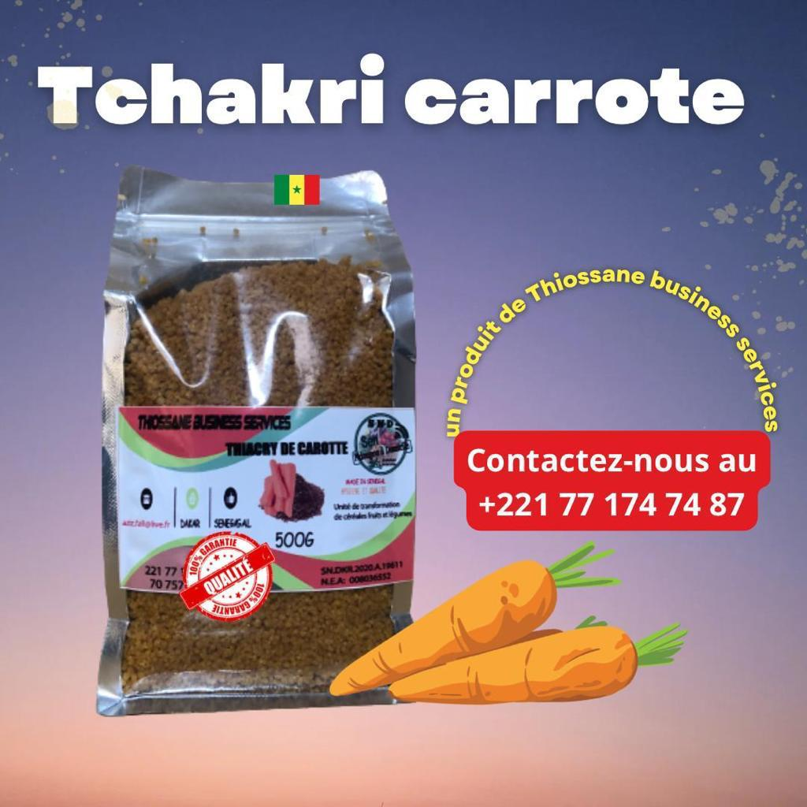
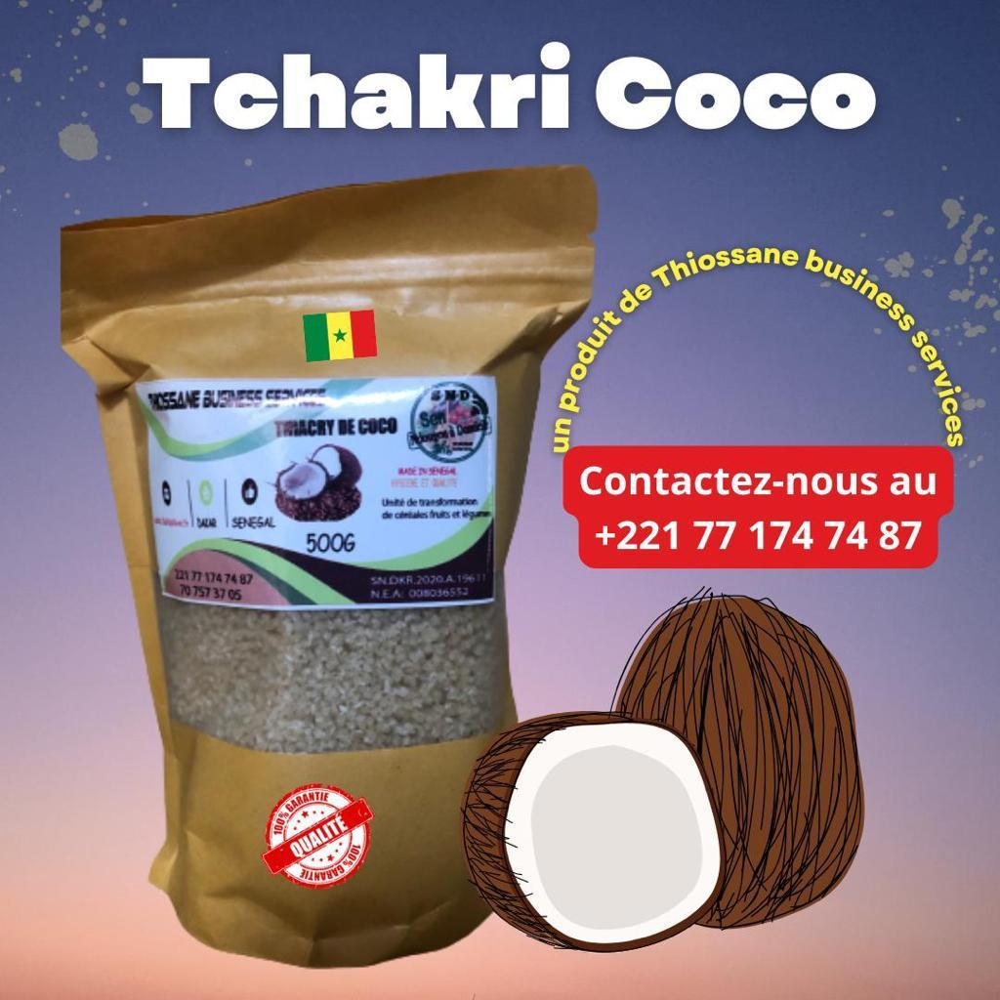
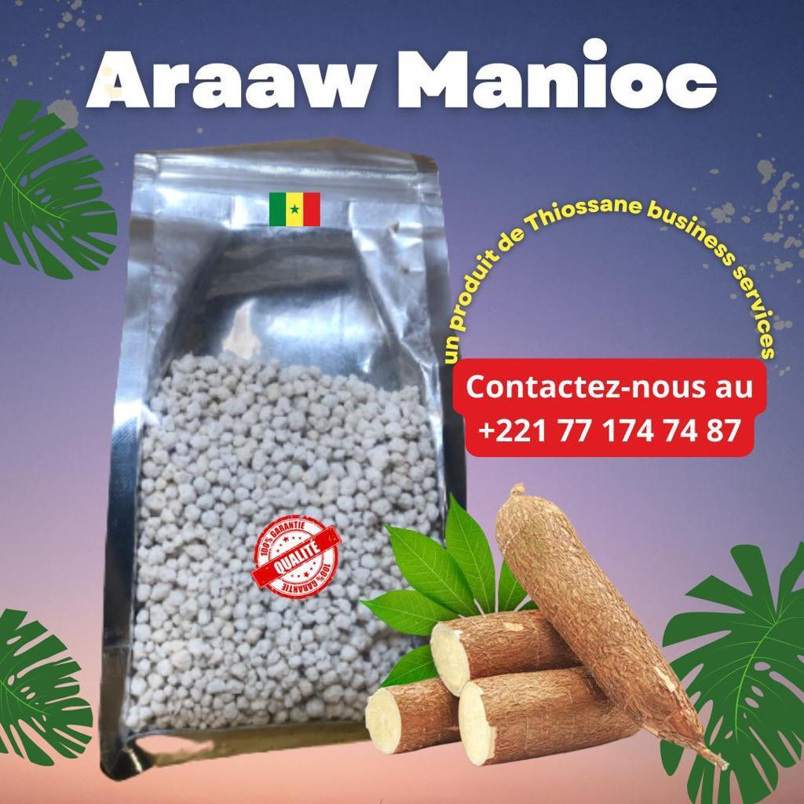
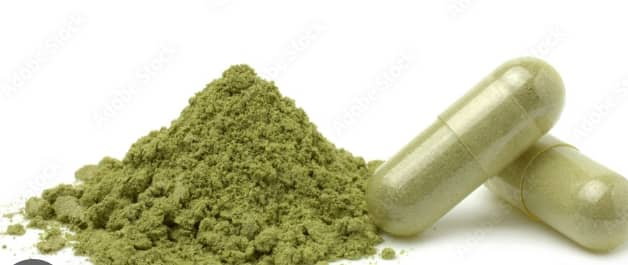
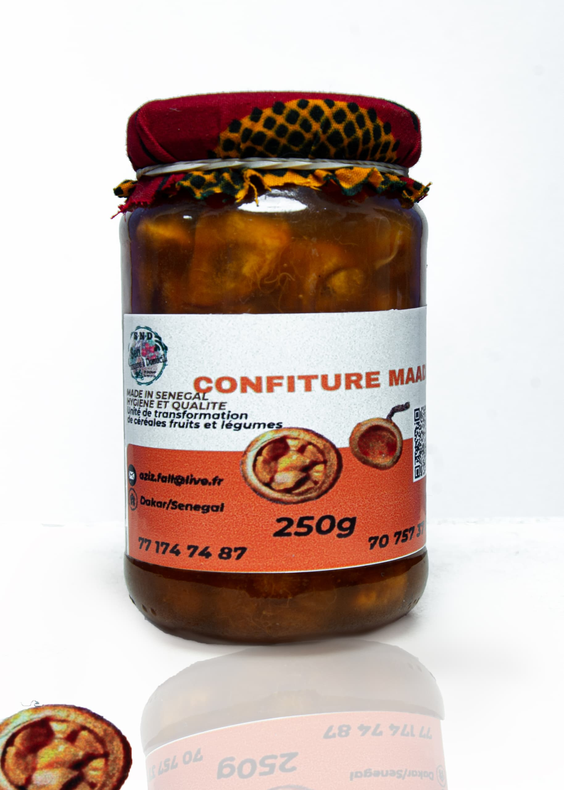

Nos Produits
Farine Infantile
Farine infantile conçue pour répondre aux besoins nutritionnels des enfants, en complément du lait maternel. Fabriquée au Sénégal et vendue à un coût abordable pour les ménages, elle contribue à lutter contre la malnutrition qui affecte le développement des jeunes enfants dans le pays, notamment dans les quartiers précaires en périphérie du Sénégal.

Thiacry Carotte
Le Thiacry carotte contient une bonne quantité de protéines aux vertus multiples : elles construisent et renouvellent les muscles, les cheveux ainsi que les ongles, et réduisent le facteur de rides du visage. Bénéfique pour les adultes et les personnes âgées.

Thiacry Coco
Le Thiacry coco contient une quantité exceptionnelle de vitamines et minéraux, éléments essentiels au maintien de l'équilibre du consommateur et au bon fonctionnement des cellules du corps, notamment pour protéger l'organisme.

Thiacry Manioc
Le Thiacry manioc contient de la vitamine A, souvent présente sous forme de rétinol, qui favorise la santé de la peau, stimule les sens et exerce une action antioxydante sur l'organisme.

Confiture de Mangue
Découvrez cette confiture de mangues exotique qui fait sensation sur des crêpes ou même au petit-déjeuner, tartinée sur une baguette.

Moringa
Le moringa est un aliment extrêmement riche en nutriments, vitamines et minéraux. Il est préférable d'en consommer le matin et/ou le midi, en cure d'un mois minimum, pour lutter contre la fatigue, les carences nutritionnelles ou renforcer l'immunité.

Araw de Riz
Araw de riz est un granulé à base de mélange de farine de mil et de manioc. Les grains, gros ou moyens, sont utilisés en cuisine africaine pour préparer du Lakh ou du Fondé au Sénégal.

Thiakry Mangue
Le Thiakry de mangue est un couscous à base de farine de mil, à gros ou moyens grains, aromatisé à la mangue et roulé manuellement puis cuit à la vapeur. Naturellement sans gluten et riche en fibres, il se prépare avec 1 volume d'eau bouillante pour 1 volume de couscous. Sachet ou Doypack de 500g.
Pour 100g : Énergie 1675kJ/396kcal · Matières grasses 4,2g · dont acides gras saturés 1,1g · Glucides 76g dont sucres 0,8g · Fibres 7,2g · Protéines 10g · Sel 0,02g.

Thiakry Coco
Le Thiakry (Dégué) à la noix de coco est un couscous à base de farine de mil, aromatisé à la noix de coco, roulé manuellement puis cuit à la vapeur. Naturellement sans gluten et riche en fibres. Sachet de 500g. Préparation : 1 volume d'eau bouillante pour 1 volume de couscous.
Pour 100g : Énergie 1675kJ/396kcal · Matières grasses 4,2g · dont acides gras saturés 1,1g · Glucides 76g dont sucres 0,8g · Fibres 7,2g · Protéines 10g · Sel 0,02g.

Confiture de Madd
Le madd est un fruit sauvage de l'été, poussant dans les savanes africaines, riche en vitamine C, thiamine, riboflavine, niacine et vitamine B6. Notre confiture, confite avec noyau et juste ce qu'il faut de sucre pour compenser son acidité naturelle, est sans additif ni conservateur. Composition : Madd (Saba Senegalensis) du Sénégal avec noyaux, sucre de canne. Se conserve 1 an à l'abri de la lumière, et au frais après ouverture (à consommer dans le mois).